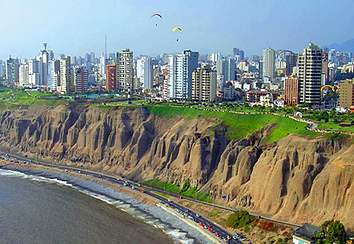

Welcome to ISUD
ISUD XII World Congress: Lima, Peru 2018
Philosophy in an Age of Crisis: Challenges and Prospects
The hosting institution was the Pontifical Catholic University of Peru (Pontificia Universidad Católica del Perú, PUCP).
The goal of this World Congress is to promote dialogue concerning various crucial philosophical issues in today’s world and to explore the role of philosophy in our complicated times. The world we live in today faces many urgent issues that require sustained and productive cross-cultural dialogue. The ideals of global peace and security remain elusive while a sense of uncertainty pervades the dominant institutions of contemporary life. Traditional human values underlying our social and political institutions are continually transformed by new developments in information technology, digitalization, artificial intelligence, and the drive for economic efficiency. Although the globalization of trade and technology has brought people together as never before, our differing outlooks, habits, and ideologies continue to separate us.
As philosophers, we must neither shut ourselves in ivory towers nor indulge ourselves with armchair philosophy. We must face the issues that define our moment in history. Our times demand that we, as philosophers, work to foster intellectual insight, imagination, social responsibility, and justice. Therefore, the International Society for Universal Dialogue issues a call for papers and proposals for panels for the 12th World Congress of ISUD on the general theme of “Philosophy in an Age of Crisis: Challenges and Prospects”, with the following sub-themes:
- 1. Philosophic innovation in a Promethean era
- 2. The ivory tower and social involvement
- 3. Cross-cultural dialogue and the building of common humanity
- 4. Learning to be human in an age of crisis and uncertainty
- 5. The Digital Revolution and the post-human
- 6. The benefits and threats of technicization and science
- 7. The status and roles of knowledge in the contemporary world
- 8. Religion, philosophy, and society
- 9. Art and morality in the contemporary world
- 10. Nationalism, populism and the challenge to universalism
- 11. Globalization, anti-globalization or glocalization
- 12. Cultural diversity and universal harmony
- 13. Cosmopolitanism and transnationalism
- 14. Ecology and environmental justice
- 15. Gender issues in family, workplace, and cultural contexts
Other Most Recent Events
- 11th World Congress in Warsaw, Poland 2016 Theme: Values and Ideals: Theory and Praxis
- 10th World Congress in Craiova, Romania 2014 Theme: The Human Being: Its Nature and Functions
- ISUD Meeting during XXIII Congress of Philosophy, Athens, 2013
Featured Video
Conference Summary, Value and Ideals:
Theory and Praxis 2016 ISUD World Congress in Warsaw, Poland
Pawel Kuczynski: Artistic Videographer of ISUD